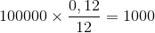
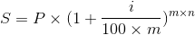
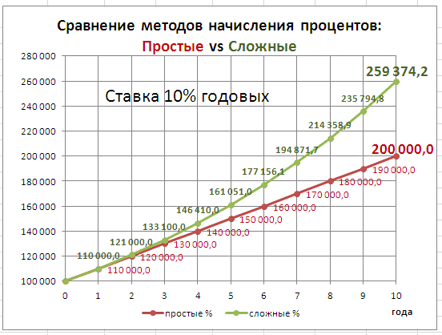

Трудно представить? Однако в реальной жизни существует аналог такой схемы – вклад с капитализацией процентов. Вклад позволяет людям положить деньги в банк и в дальнейшем получить доход за счет начисления процентов от изначальной суммы.
Сложные процентыПредставьте, что вам подарили коробку с сотней конфет, и поставили условие: к этим конфетам каждый день будут добавляться несколько новых, и если вы не будете их есть, то эта «добавка» будет расти. Трудно представить? Однако в реальной жизни существует аналог такой схемы – вклад с капитализацией процентов. Вклад позволяет людям положить деньги в банк и в дальнейшем получить доход за счет начисления процентов от изначальной суммы. А капитализация процентов – это причисление процентов к сумме вклада, которое позволяет в дальнейшем осуществлять начисление процентов на проценты путем выполнения двойной операции — выплата процентов и пополнение. Пример:Допустим, вы положили в банк 100 000 руб. под 12% годовых, и процент начисляется ежемесячно. Капитализация процентов (сложный процент) или ее отсутствие (простой процент) зависят от условий конкретных вкладов. Если вклад не предполагает капитализации процентов, начисления каждый месяц будут составлять  рублей. Если же вклад предусматривает капитализацию процентов, то начисления будут выглядеть следующим образом:
Первый месяц: рублей Для того, чтобы вычислить сумму, которые вы получите в итоге с капитализацией процентов, можно использовать формулу , в которой S – итоговая сумма вклада, P – начальная сумма, i – ставка по вкладу в процентах, m – число раз начисления процентов за год, n – число лет, на протяжении которых открыт вклад. Если рассмотреть пример выше, может показаться, что разница в начислениях между сложным и простым процентом незначительна. Однако в долгосрочной перспективе она становится заметнее.  Конечно, у сложных процентов есть и недостатки: в таких вкладах нельзя частично изымать вложенные средства до окончания срока вклада, и поэтому сложные проценты, в отличие от простых, могут принести доход только в долгосрочной перспективе. Однако из-за того, что такие вклады позволяют получить больший доход, который можно потратить в будущем, они часто являются рациональным вложением. Игра: |